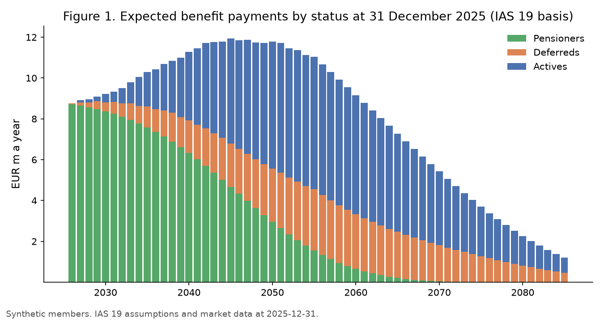
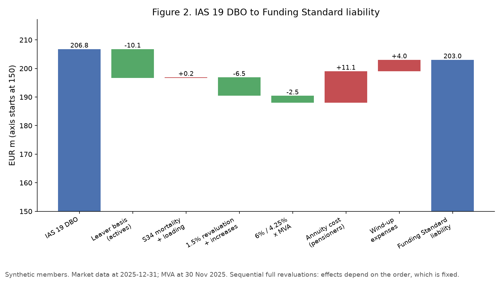
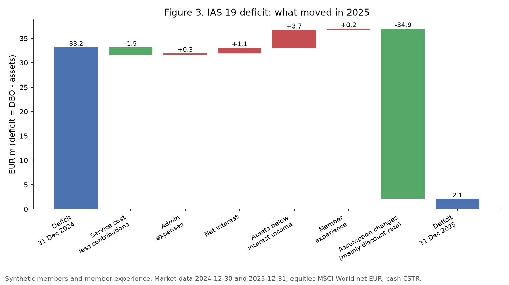
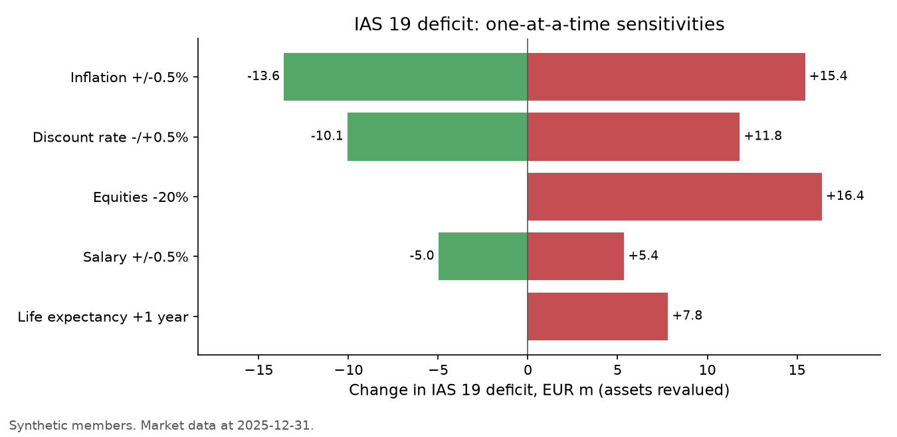
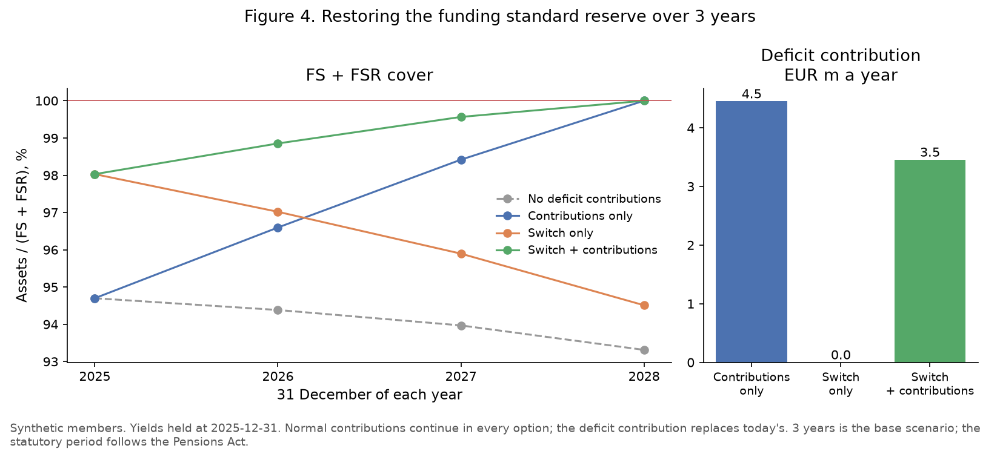
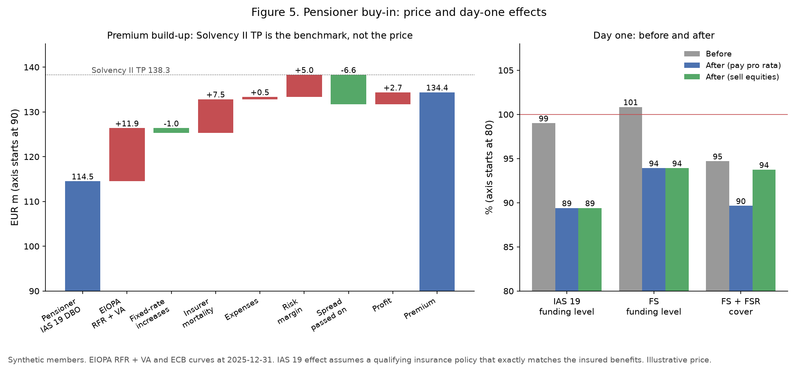

Pensions actuarial project · Python, Excel
DB Pension Scheme Model
What has an Irish final-salary scheme promised, what is it worth to the company and to the trustees, why did that change in 2025, and should the sponsor pay more, the trustees de-risk, or the pensioners be insured?
One member-level engine values the same benefits under IAS 19 and under the Irish Funding Standard with its reserve, rolls the scheme through 2025 on actual market data, measures risk, sizes a three-year funding proposal and prices a pensioner buy-in: two liability measures plus one transaction price.
Synthetic members, real market and statutory data. All member data and member experience are synthetic. Market data are public and dated. Illustrative implementation based on published Pensions Authority and Society of Actuaries in Ireland guidance; not an actuarial certification or regulatory filing.
What the model found
Six results at 31 December 2025, each written by the pipeline to outputs/.
IAS 19 DBO and Funding Standard liability for the same 992 members. The €3.8m net gap hides −€18.8m on non-pensioners and +€15.1m of annuity pricing and wind-up costs.
Yields rose (discount rate 3.51% → 4.37%): the curve alone took €32.2m off the DBO, and the Funding Standard level rose from 97.4% to 100.8%.
Statutory transfer values barely move with rates, so the same portfolio hedges about twice as much Funding Standard rate risk as IAS 19 rate risk.
Or €3.5m with a 20% equity-to-long-sovereign switch, which cuts the FS + FSR shortfall by 64% but gives up about €1.3m a year of expected return.
Illustrative premium €134.4m (Solvency II TP 121%); IAS 19 loss €19.9m under the exact-match assumption; the reserve falls to €3.6m but the price is 7% above the statutory annuity basis.
Every published Section 34 market value adjustment since 2017; three members reconcile to Excel to the cent; the bridge and the analysis of change close with zero residual.
Two liability measures
Same members, different purpose, different number.
IAS 19 is a going-concern, best-estimate measure: projected unit credit, salaries projected to exit, AA-consistent discounting (single equivalent rate 4.37%, duration 15.6 years). The Funding Standard asks whether the scheme could meet accrued benefits on a wind-up today: actives are treated as leaving now, non-pensioners are valued as Section 34 transfer values with the market value adjustment, pensioners at annuity cost, plus wind-up expenses.
| EUR m, 31 December 2025 | IAS 19 | Funding Standard |
|---|---|---|
| Actives | 61.9 | 45.9 |
| Deferreds | 30.4 | 27.6 |
| Pensioners | 114.5 | 125.6 |
| Wind-up expenses | – | 4.0 |
| Total | 206.8 | 203.0 |
| Assets | 204.7 | 204.7 |
| Funding level | 99.0% | 100.8% |
| Funding standard reserve (FSR) | – | 13.2 |
| Assets / (FS + FSR) | – | 94.7% |


What moved in 2025
Every euro of the change in the deficit has a cause.
The DBO fell from €238.5m at 31 December 2024 to €206.8m, which equals an independent revaluation of the closing data. Assets were revalued on the same curves, with equities at the MSCI World net EUR return and cash at €STR. The 2025 charge to profit or loss was €4.3m and the gain in other comprehensive income €31.0m.

Risk
Which basis is the hedge ratio measured on?
Asset PV01 against liability PV01 gives 32% on IAS 19 and 67% on the Funding Standard. A 0.5% fall in yields costs 5.2 points of IAS 19 funding level but only 1.2 on the statutory basis.

Contributions or investment?
What does each option solve, and at what cost?
The scheme meets the Funding Standard (100.8%) but not the Funding Standard plus the €13.2m reserve (94.7%). Members, the statutory liability and the reserve are projected year by year with yields held at end-2025 levels; the deficit contribution is solved so that assets cover the Funding Standard plus reserve at the end of year 3.
| Option (3-year plan) | Deficit contribution a year, EUR m | Total over 3 years | FS + FSR cover now | Cover in year 3 | Hedge ratio IAS 19 / FS | Expected return |
|---|---|---|---|---|---|---|
| Contributions only | 4.5 | 13.4 | 94.7% | 100.0% | 32% / 67% | 4.41% |
| Switch only | 0.0 | 0.0 | 98.0% | 94.5% | 52% / 106% | 3.77% |
| Switch + contributions | 3.5 | 10.4 | 98.0% | 100.0% | 52% / 106% | 3.77% |

Pensioner buy-in
What does insuring the pensioners cost, and what does it do on day one?
The insurer's Solvency II technical provisions (EIOPA risk-free rate with volatility adjustment, annuitant mortality, expenses and a cost-of-capital risk margin of €5.0m) are the benchmark, not the price: premium = technical provisions − investment spread passed on + profit = €134.4m. Under IAS 19 the policy is worth the insured DBO, so the company books €19.9m in other comprehensive income (assuming a qualifying policy that exactly matches the insured benefits). Under the Funding Standard the annuities replace the pensioner liability, which cuts the reserve; but the price is 7% above the statutory annuity basis, so the Funding Standard level falls.
| Day one | Before | After, pay pro rata | After, sell equities first |
|---|---|---|---|
| IAS 19 funding level | 99.0% | 89.4% | 89.4% |
| Funding Standard level | 100.8% | 93.9% | 93.9% |
| Funding standard reserve, EUR m | 13.2 | 3.6 | 0.1 |
| Assets / (FS + FSR) | 94.7% | 89.6% | 93.7% |

Validation
- All 116 published Section 34 MVA factors since January 2017 reproduced to three decimals.
- Three members recomputed in live Excel formulas on the IAS 19, transfer-value and annuity bases, agreeing to the cent.
- The bridge and the analysis of change close with zero residual; asset and net-liability identities hold.
- Every injected data error found; membership reconciliation differences zero.
- The AA spread is calibrated to three Irish 2025 annual reports and mortality to the life expectancies disclosed in two of them.
- Every number on this page is generated from
outputs/, and a test checks it.
Limitations
- Synthetic members and experience; no spouses' pensions, early retirement or commutation.
- ECB AAA curve plus a constant spread instead of an AA corporate curve; French 2032 bonds as the inflation proxy instead of the euro inflation swap curve.
- Annual timing and deterministic inflation, which understates the value of the 3% cap and 0% floor.
- Illustrative annuity cost and buy-in price; the statutory annuity basis sits below the insurer price.
- The statutory recovery period follows the Pensions Act and is not modelled.